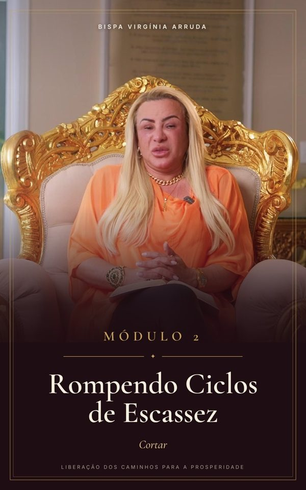
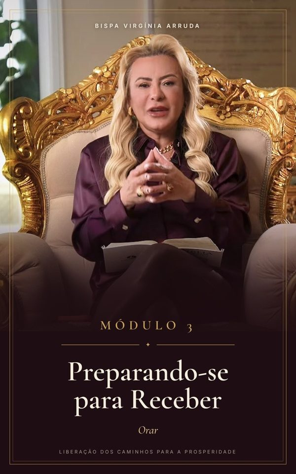
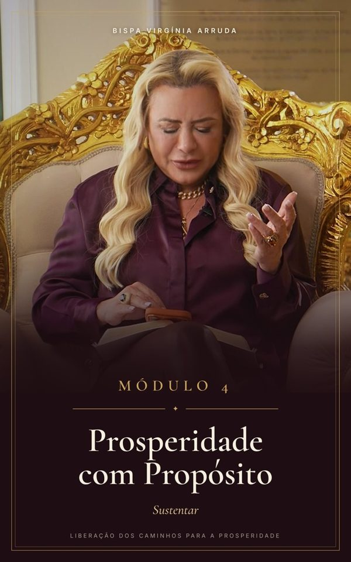

Módulo i · aulas 1 a 4
As Chaves que Abrem Caminhos
- 01Caminho fechado não é falta de fé
- 02Os princípios que vêm antes de todo ciclo novo
- 03De onde vêm os bloqueios
- 04Exercício: o mapa do seu caminhocom material em PDF

E se o problema não for a ausência de uma promessa, mas algo que tem impedido você de acessá-la?
Quero começar agora15 aulas · 4 módulos · Mapa do Caminho em PDF · Declaração dos 7 Dias · Acesso imediato
Trabalha muito, se esforça de verdade, mas sente que avança pouco.
Vê o mesmo ciclo se repetir: o dinheiro entra e não para, a oportunidade chega e escapa.
Carrega palavras que ouviu a vida inteira — “nessa família ninguém vence” — sem perceber que ainda acredita nelas.
Sabe que Deus tem algo preparado, mas não entende o que está impedindo você de chegar lá.
Caminho fechado não é falta de fé. Muitas vezes é algo que ficou de pé — uma mágoa, um acordo, uma palavra — e que precisa ser identificado, entregue e quebrado.
Aulas curtas, diretas e práticas, com a Bispa conduzindo cada passo — da origem do bloqueio até a rotina que sustenta o novo ciclo.



Um exercício em PDF para escrever as áreas travadas da sua vida e há quanto tempo estão assim. É o primeiro passo para sair da posição de espectador.
Sete manhãs, sete declarações baseadas na Palavra, com versículo do dia e espaço para marcar cada dia cumprido.
A oração de liberação dos caminhos conduzida pela Bispa, para você refazer sempre que precisar.
Bispa, cantora, mentora, empresária e voz profética. Começou gravando um simples “bom dia” e viu a Palavra do Dia alcançar pessoas no mundo inteiro. Antes disso, passou pela escassez de perto — morou na casa dos outros, andou de ônibus, passou fome — e aprendeu a não desprezar o pequeno começo.
“Podem tirar tudo de mim, mas a minha fé ninguém nunca vai roubar.”
Entre, assista às aulas e faça os exercícios. Se em até 7 dias você sentir que o curso não é para você, é só pedir o reembolso e devolvemos 100% do valor.
Cancele quando quiser, sem multa e sem burocracia.
Pagamento seguro · Cartão ou Pix · 7 dias de garantia
Logo após a confirmação do pagamento você recebe por e-mail o acesso à área de membros, onde estão todas as aulas e materiais.
Não. As aulas são gravadas e ficam disponíveis para você assistir quando e quantas vezes quiser, pelo celular ou computador.
As aulas são curtas e diretas, pensadas para caber na sua rotina. Você pode fazer uma por dia ou no ritmo que preferir.
São R$ 47 por mês enquanto você quiser manter o acesso. Você pode cancelar a qualquer momento, sem multa.
Você tem 7 dias de garantia. Se não for para você, basta pedir o reembolso dentro desse prazo.
Não. O curso é ensino, reflexão e prática espiritual. Ele ajuda você a identificar bloqueios, alinhar a sua vida com Deus e agir com mais sabedoria — o resultado depende do seu caminho, do seu trabalho e da sua fé.
“Eis que diante de ti pus uma porta aberta, e ninguém a pode fechar.”Apocalipse 3:8 Quero começar agora